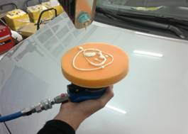

当前位置：首页 > 实训项目与考核 > 实训项目清单
项目流程
表6 打蜡机打蜡的流程
| 环节 | 项目 | 具体程序 | 操作目的及 注意事项 | 作业示意图 |
|---|---|---|---|---|
| 1 | 清洗 | 1）用强力清洗剂清洗车身。 | 注意事项： 1）待车身完全干燥后才能进行上蜡。 |
|
| 2 | 遮盖橡胶和塑料件 | 1）将车身饰条、车窗防雨密封条等橡胶件、塑料件等用纸胶带遮盖。 | 操作目的： 1）避免车身饰条、车窗防雨密封条等橡胶件和塑料件上蜡。 |
 |
| 3 | 研磨与抛光 | 1）按研磨抛光的施工流程清除车漆表面的划痕、氧化层等缺陷。 2）冲洗干净 |
注意事项： 1)研磨抛光流程的注意事项。 |
|
| 4 | 准备打蜡机 | 1）将干净的盘套装在打蜡机上，接通电源 | 注意事项： 1）选择合适的打蜡盘，保证通电良好。 |
|
| 5 | 上蜡 | 1）在海绵盘上均匀涂上一层薄薄的液体蜡。 2）将打蜡机平放在车身表面上，按下操作开关开始上蜡，每次按0.5平方米的面积涂匀，直至打完全车。 |
注意事项： 1）喷涂在海绵盘上的液体蜡不易太厚。 2）打蜡机每次涂抹的面积一定。 |
 |
| 4 | 抛蜡 | 1）上蜡后等待5-10min，当车蜡在车漆表面开始发白。 2）将打蜡机的海绵盘取下，换上抛蜡盘均匀打磨、抛光。 |
注意事项： 1）操作打蜡机不可用力过大，以免损害原漆面。 2）打蜡机转行转向时，每次要重叠1/2的轮径，使漆面的每个部位得到充分的打抛。 3）打蜡机移动的速度应缓慢、均匀和平稳。 |
|
| 5 | 补缺 | 1）车身有些部位打蜡机难以接近，使得这些部位无法用打蜡机打蜡，打蜡机打蜡后应通过手工打蜡进行局部补缺。 | 注意事项： 1）仔细检查没有被打蜡机打蜡的部位。 |
上一页 1 2 3 4 5 6 7 8 下一页